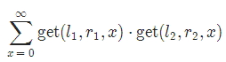

BZPRO
#5016. [Snoi2017]一个简单的询问
内存限制：512 MiB
时间限制：30 Sec
提交
提交记录
讨论
题目描述
给你一个长度为N的序列ai，1≤i≤N和q组询问，每组询问读入l1,r1,l2,r2，需输出
get(l,r,x)表示计算区间[l,r]中，数字x出现了多少次。
输入格式
第一行，一个数字N，表示序列长度。
第二行，N个数字，表示a1～aN
第三行，一个数字Q，表示询问个数。
第4～Q+3行，每行四个数字l1,r1,l2,r2，表示询问。
N,Q≤50000
N1≤ai≤N
1≤l1≤r1≤N
1≤l2≤r2≤N
注意：答案有可能超过int的最大值
输出格式
对于每组询问，输出一行一个数字，表示答案
样例
样例输入
5
1 1 1 1 1
2
1 2 3 4
1 1 4 4
样例输出
4
1
数据范围与提示